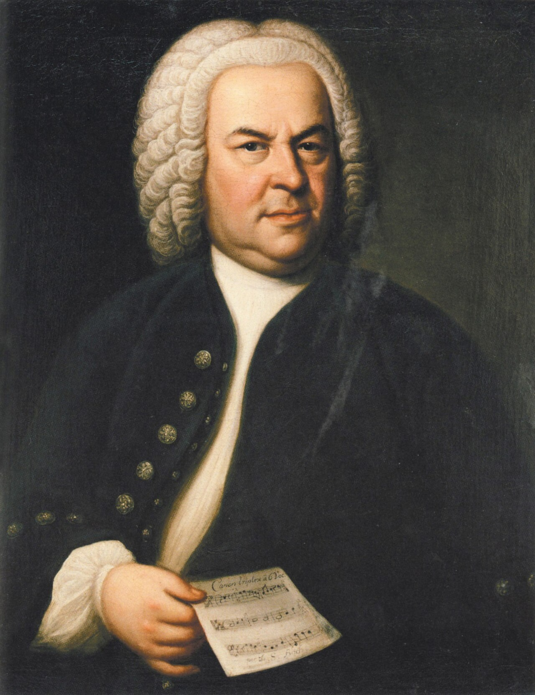

Музыка · 44-бөлім · Бах және полифония Music · Section 44 · Bach & Polyphony Музыка · Раздел 44 · И. С. Бах и полифония
Бірнеше тең әуен бір уақытта — бұл полифония, ал оның ұлы шебері — Бах. Several equal melodies at once — that is polyphony, and its great master is Bach. Несколько равных мелодий одновременно — это полифония, а её великий мастер — Бах.
Иоганн Себастьян Бах (1685–1750) — барокко дәуірінің ұлы неміс композиторы, музыка тарихындағы полифонияның ең үлкен шебері. Johann Sebastian Bach (1685–1750) is a great German composer of the Baroque era and the greatest master of polyphony in music history. Иоганн Себастьян Бах (1685–1750) — великий немецкий композитор эпохи барокко, величайший мастер полифонии в истории музыки.
Ол органист және кантор (шіркеу хорының жетекшісі) болып жұмыс істеді. He worked as an organist and a cantor (director of a church choir). Он работал органистом и кантором (руководителем церковного хора).
Бах орган, клавир, хор үшін жазды: мессалар, кантаталар, «Страсти» (азап туралы шығармалар). Bach wrote for the organ, the clavier and the choir: masses, cantatas and Passions. Бах писал для органа, клавира, хора: мессы, кантаты, «Страсти».
💡 Bach есімі ноталармен жазылады: си♭ – ля – до – си (B–A–C–H). Композитор оны өз шығармаларында тақырып ретінде қолданған. 💡 The name Bach is spelled in notes: B♭ – A – C – B♮ (B–A–C–H). The composer used it as a theme in his works. 💡 Имя Bach записывается нотами: си♭ – ля – до – си (B–A–C–H). Композитор использовал его как тему в своих произведениях.

Полифония — бір уақытта естілетін бірнеше дербес, тең құқылы әуеннен (дауыстан) тұратын көпдауыстылық. Polyphony is many-voiced music made of several independent, equal melodies (voices) sounding at the same time. Полифония — многоголосие из нескольких самостоятельных равноправных мелодий (голосов), звучащих одновременно.
🎧 тақырып дауыстарда кезекпен кіреді the theme enters in the voices one after another тема вступает в голосах по очереди
💡 Гомофонияда бір басты әуен болады, ал қалғаны — сүйемелдеу. Полифонияда барлық дауыстар тең: әрқайсысының өз әуені бар. 💡 In homophony there is one main melody and the rest is accompaniment. In polyphony all voices are equal: each has its own melody. 💡 В гомофонии есть одна главная мелодия, а остальное — сопровождение. В полифонии все голоса равны: у каждого своя мелодия.
Фуга Fugue Фуга
полифонияның жоғары формасы: басты тақырып барлық дауыстарда кезекпен кіреді (имитацияланады). the highest form of polyphony: the main theme enters (is imitated) in all voices in turn. высшая форма полифонии: главная тема поочерёдно вступает (имитируется) во всех голосах.
🎵Инвенция Invention Инвенция
шағын полифониялық пьеса (көбінесе оқу мақсатында жазылған). a small polyphonic piece (often for study). небольшая полифоническая пьеса (часто учебная).
🎵ХТК WTC ХТК
«Жақсы темперацияланған клавир» — Бахтың атақты жинағы: барлық 24 тональділіктегі прелюдиялар мен фугалар (2 том). "The Well-Tempered Clavier" — Bach's famous collection: preludes and fugues in all 24 keys (2 volumes). «Хорошо темперированный клавир» — знаменитый сборник Баха: прелюдии и фуги во всех 24 тональностях (2 тома).
🎵📌 ХТК-да барлық 24 тональділік қамтылған: 12 мажор және 12 минор. Бах осылайша темперацияланған күйдің барлық тональділікте ойнауға болатынын дәлелдеді. 📌 The WTC covers all 24 keys: 12 major and 12 minor. In this way Bach showed that equal temperament lets one play in every key. 📌 В ХТК охвачены все 24 тональности: 12 мажорных и 12 минорных. Так Бах доказал, что темперированный строй позволяет играть во всех тональностях.
Композитордың есімі нотамен жазылады: си♭ – ля – до – си. Ноталарды басып, әуенді тыңдаңыз. The composer's name is written in notes: B♭ – A – C – B♮. Click the notes to hear the motif. Имя композитора записывается нотами: си♭ – ля – до – си. Нажимайте ноты и послушайте мотив.
🎧 ноталарды басып, B–A–C–H мотивін тыңдаңыз click the notes to hear the B–A–C–H motif нажимайте на ноты, чтобы услышать мотив B–A–C–H